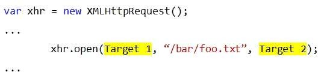
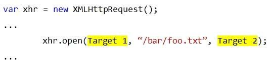
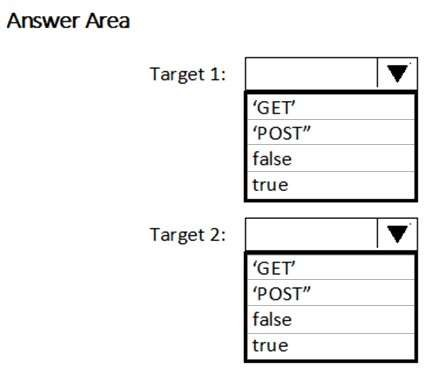
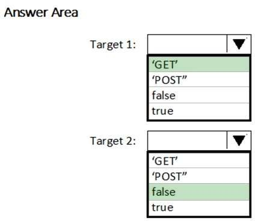

HOTSPOT
You have the following code.
 

You need to complete the code to meet the following requirements:
- The call to the Open method must run synchronously.
- The parameters in the call must be sent by using the query string.
How should you complete the code? To answer, select the appropriate options in the answer area.
NOTE: Each correct selection is worth one point.
Hot Area:

Correct Answer:

Section: Volume D Explanation
Explanation/Reference:
Explanation:
XMLHttpRequest().open(GET, url,false);
Target 1: GET
GET is required for parameters to be sent in the query string
Target 2: false
The default is true, which allows for asynchronous operation. False is for synchronous operation.
References:
https://developer.mozilla.org/en-US/docs/Web/API/XMLHttpRequest/Using_XMLHttpRequest
https://stackoverflow.com/questions/6461958/parameter-true-in-xmlhttprequest-open-method
Explicación
Según la definición del objento en el documento oficial:
https://developer.mozilla.org/en-US/docs/Web/API/XMLHttpRequest/open
La sintaxis es:
XMLHttpRequest.open(method, url[, async[, user[, password]]])
- El primer argumento es un método es un verbo del http request
- El segundo es un url - DomString
- El tercer es async tomando true or false para verificar si la transmisión es asíncrono o no.
(get, url, false)
Respuesta:
Por lo anterior:La respuesta para el primer target es "GET".
La Respuesta para la segunda target es "false".
Fuentes:
Las misma citada en la respuesta dada, ademas de:https://developer.mozilla.org/en-US/docs/Web/API/XMLHttpRequest/open